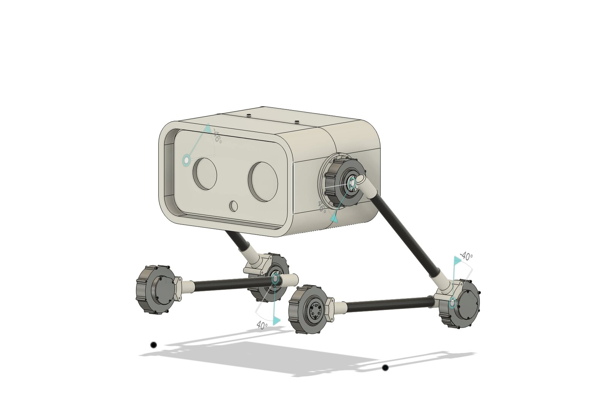
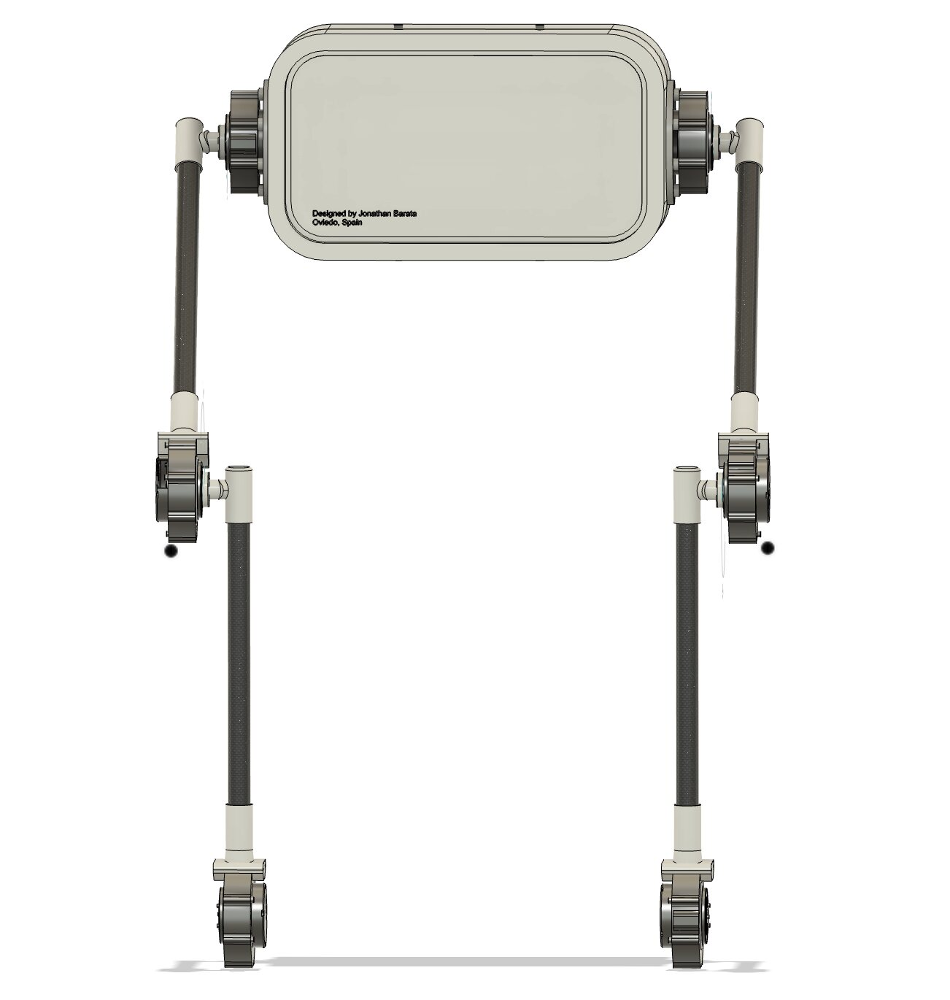
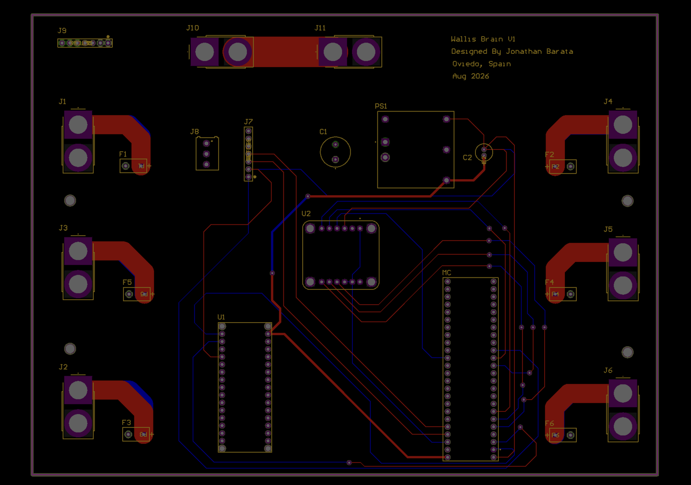
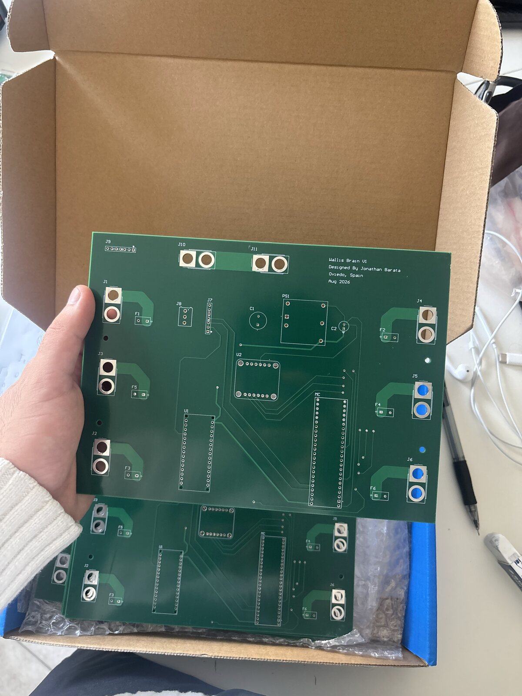
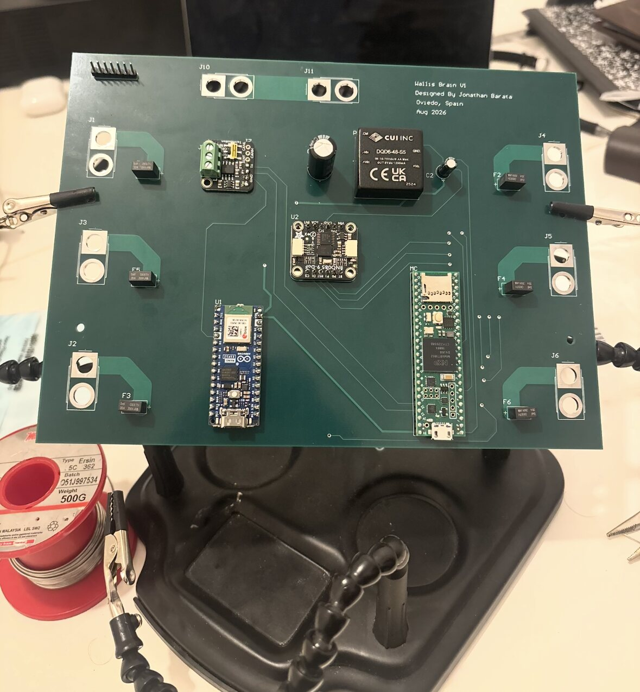

Overview
Wheeled legs combine the efficiency of wheels with legs that can change height and absorb disturbances. My goal was a robot that stays balanced through a full squat-to-stand motion and recovers when it is pushed.
Mechanical design
I designed the robot in Fusion 360 around six SteadyWin GIM8108 integrated BLDC actuators.
- PETG motor mounts and rotating mounts fixed to the motors
- Fixed mounts holding carbon fiber structural tubes
- An electronics enclosure in the head, placed to keep the mass centered


Simulation and control
To get the CAD model into simulation, I patched a Python-based Fusion 360 URDF exporter so its output works in MuJoCo, with realistic joint limits and actuator torque limits. I then tuned PID, LQR and MPC controllers until the robot balanced through the full squat-to-stand motion and recovered from disturbances in simulation.
- Add: a short comparison of the three controllers and which one you chose.
Power and control board
I designed a 4-layer board in Altium that powers and connects everything: 48 V distribution on dual power planes, six fused 20 A motor channels, CAN, 48 V to 5 V conversion, a Teensy 4.1, WiFi control and a 9-DOF IMU. JLCPCB fabricated it and I assembled it myself.



Command path
Position and velocity commands travel from a laptop to the motors like this:
- Laptopposition / velocity
- WiFiwireless link
- Teensy 4.1serial to CAN
- CAN bus48 V board
- 6 × GIM8108BLDC actuators
Next steps
The board is assembled and the robot is moving from simulation to hardware. Next is running the balance controllers on the real robot and comparing them against simulation.